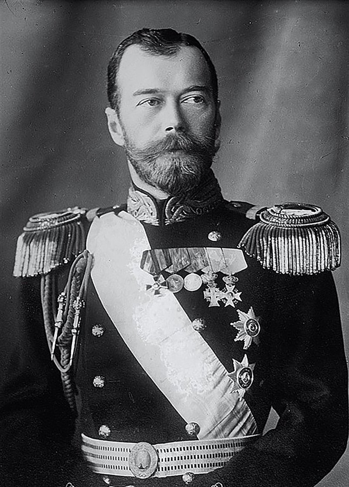
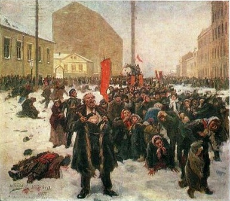
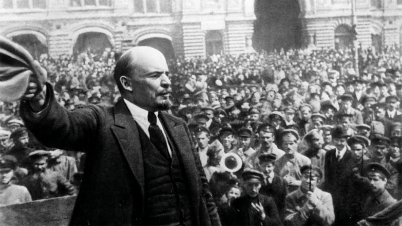
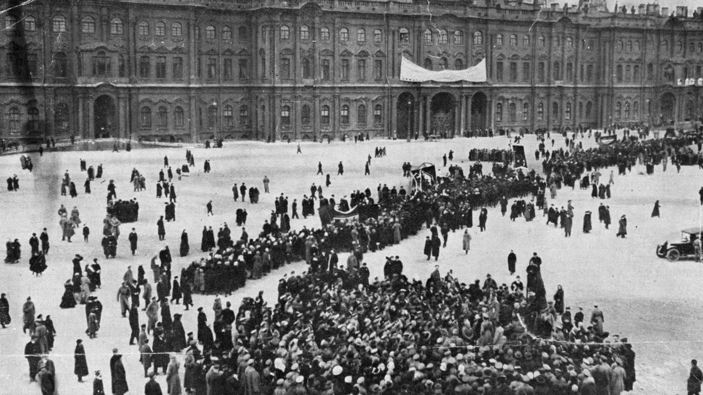
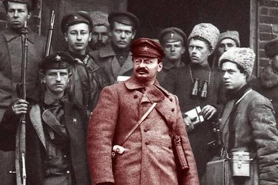
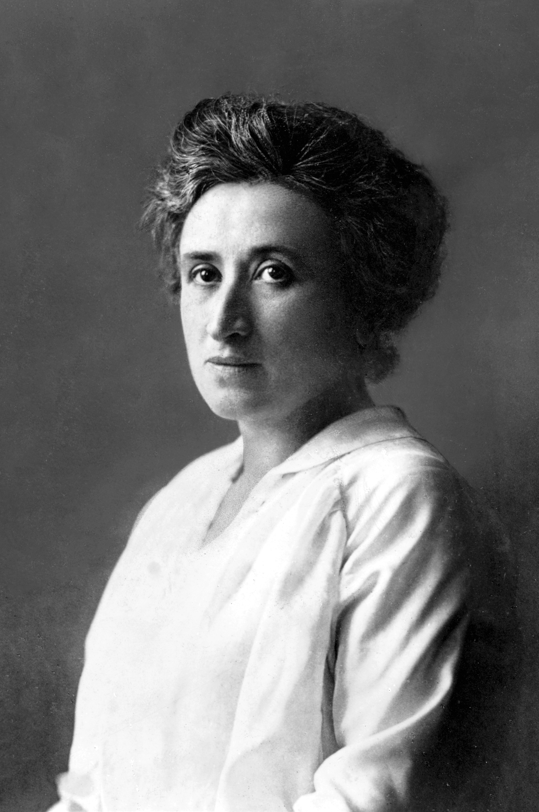

La crisi dello zarismo: dal 1905 alla Rivoluzione di Febbraio
- Potere assoluto dello zar Nicola II e campagne in profonda povertà.
- Bolscevichi vs Menscevichi:
- La rivoluzione del 1905: La "Domenica di sangue" e la nascita dei primi Soviet.
- L'abdicazione dello zar: Rivoluzione di Febbraio 1917 e nascita del "doppio potere".

Ritratto ufficiale Zar Nicola II

Domenica di sangue 1905 Pietroburgo
Il 1917, la presa del potere bolscevica e la pace di Brest-Litovsk
- Le Tesi di Aprile
- I bolscevichi al potere: Insurrezione armata e conquista del Palazzo d'Inverno (Ottobre 1917).
- I primi provvedimenti
- La dittatura leninista
- La pace di Brest-Litovsk

Lenin - Comizio del 1917

Assalto al Palazzo d'Inverno 1917
La Guerra Civile, il Comunismo di guerra e la nascita dei Partiti Comunisti
- Una terribile guerra civile: Scontro totale vinto dall'Armata Rossa organizzata da Trotzkij.
- L'eliminazione dello zar e il Comunismo di guerra
- La Terza Internazionale (Comintern)
- La scissione di Livorno (1921): Nascita del Partito comunista d'Italia (Bordiga e Gramsci).

Lev Trotzkij con l'Armata Rossa
La NEP, l'URSS e le rivoluzioni fallite in Europa
- La NEP
- La nascita dell'URSS (1922) e la morte di Lenin (1924)
- La repressione dei comunisti: La "settimana di sangue" a Berlino e l'uccisione di Rosa Luxemburg e Karl Liebknecht (1919).
- La guerra russo-polacca
Bandiera URSS 1922 (1922)

Rosa Luxemburg